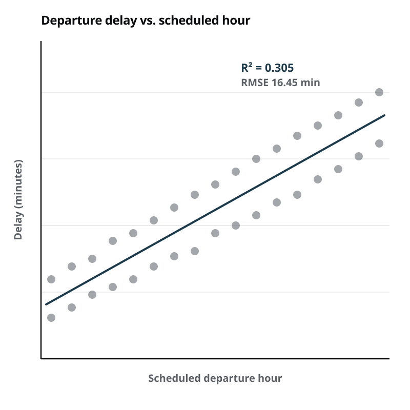

Predicting Flight Delays at Major U.S. Airports
A three-person team building an end-to-end pipeline for departure delays at BOS, JFK, MIA, DEN, and LAX — including a linear regression written from scratch, and an honest account of where it stops working.
- Where
- Course project
- When
- September – December 2025
- Lane
- Analysis
- Tools
- Python, NumPy, pandas, scikit-learn, Matplotlib, Seaborn

- 0.305R² (delay duration)
- 16.45RMSE, minutes
- 61%Classifier accuracy
- 0.64AUC
The question
Given only what you know when you book — the airline, the airport, and the scheduled departure hour — how much can you say about whether a flight will leave late?
We deliberately restricted ourselves to information available in advance. It would have been easy to improve the numbers by including features that are only known near departure time, but a model that needs to know the aircraft has already arrived late isn't answering the question anyone actually asks.
Building the pipeline
We pulled real-time flight data from the AviationStack API across five airports chosen to span different geographies and congestion profiles: Boston, JFK, Miami, Denver, and LAX. Feature engineering came down to three signals — carrier, origin airport, and scheduled departure hour — encoded so that a linear model could use them.
The scheduled hour turned out to be the most informative of the three, and in hindsight the most intuitive: delays accumulate through the day as aircraft and crews fall behind, so a 6 a.m. departure starts from a clean slate in a way an 8 p.m. departure does not.
Regression from scratch
Rather than call scikit-learn and move on, I implemented the linear regression
directly with NumPy matrix operations — solving the normal equations rather than treating
the fit as a black box. It's a small amount of code, and writing it is the difference
between knowing that a model has coefficients and knowing where they come from.
X = np.column_stack([np.ones(len(df)), *encoded_features]) beta = np.linalg.solve(X.T @ X, X.T @ y) y_hat = X @ beta residual = y - y_hat rmse = np.sqrt(np.mean(residual ** 2)) r2 = 1 - residual.var() / y.var()
On held-out data the model reached an R² of 0.305 and an RMSE of 16.45 minutes. That R² is the honest headline: roughly 30% of the variance in delay duration is explained by carrier, airport, and hour. The other 70% is weather, upstream delays, mechanical issues, and air traffic control — none of which we gave it.
Where it breaks
The residual analysis was the most instructive part of the project. Plotting residuals against fitted values showed clear heteroscedasticity: the model is reasonably tight for flights it predicts will be roughly on time, and increasingly unreliable for flights it predicts will be badly delayed.
That makes sense. Being on time is one state; being delayed can mean twenty minutes or four hours, and the tail is long and driven by causes outside our features. A single linear model fitted across both regimes is being asked to do something it cannot do, and the residual plot says so plainly.
Reframing it as a classification
Since predicting the exact number of minutes was the harder problem, we also asked the easier and arguably more useful question: will this flight be more than 15 minutes late — the threshold the FAA uses to call a flight delayed?
A logistic regression on the same features reached 61% accuracy with an AUC of 0.64. Better than a coin flip and genuinely informative, but nowhere near something you'd plan around. We reported it that way rather than picking the framing that flattered the result.
What I'd do next
- Integrate historical weather at the origin airport, which is the single largest missing driver.
- Add upstream aircraft rotation — whether the inbound aircraft is already running late — accepting that it narrows when the prediction can be made.
- Try a model that can represent the two regimes separately, instead of forcing one line through both.
- Collect across a longer window. Our data covers one stretch of the calendar, and seasonality is clearly not captured.
Built with a three-person team. We co-authored a formal research report covering methodology, ethical considerations around using delay predictions, and the improvements above. The from-scratch regression, residual diagnostics, and heteroscedasticity analysis were my contributions.